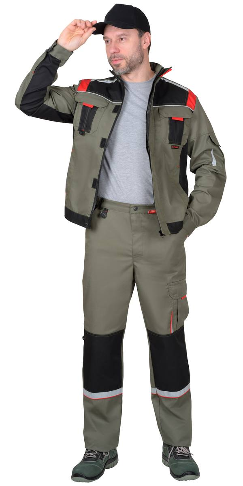
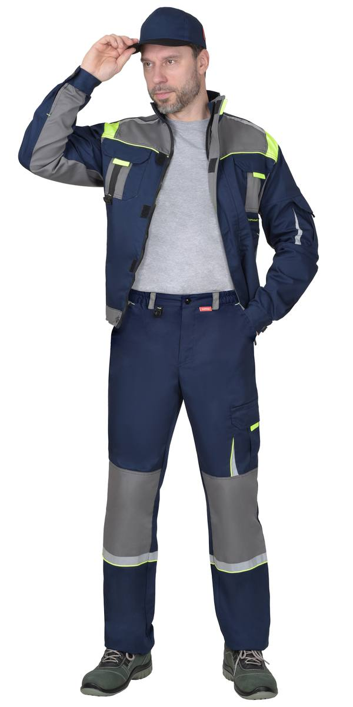
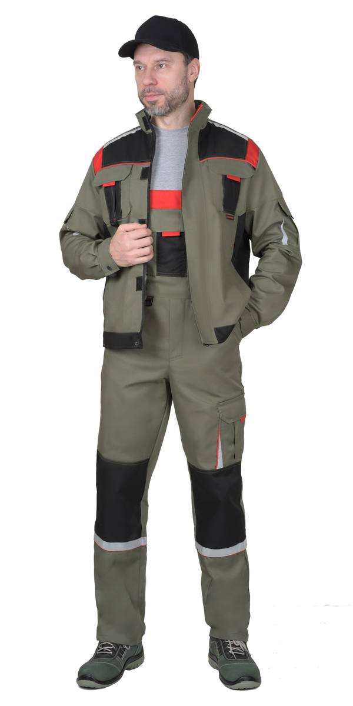
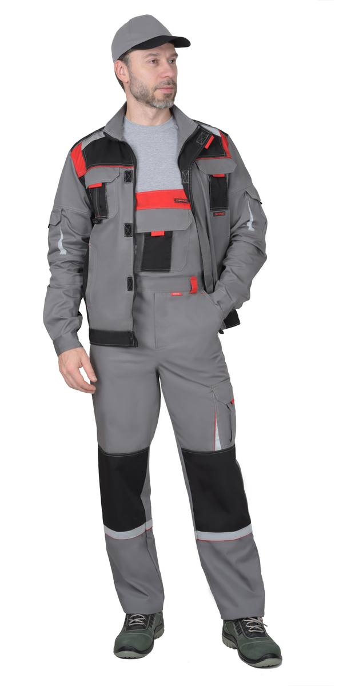
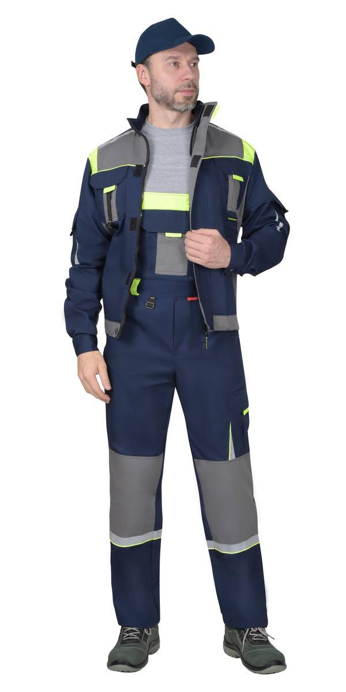
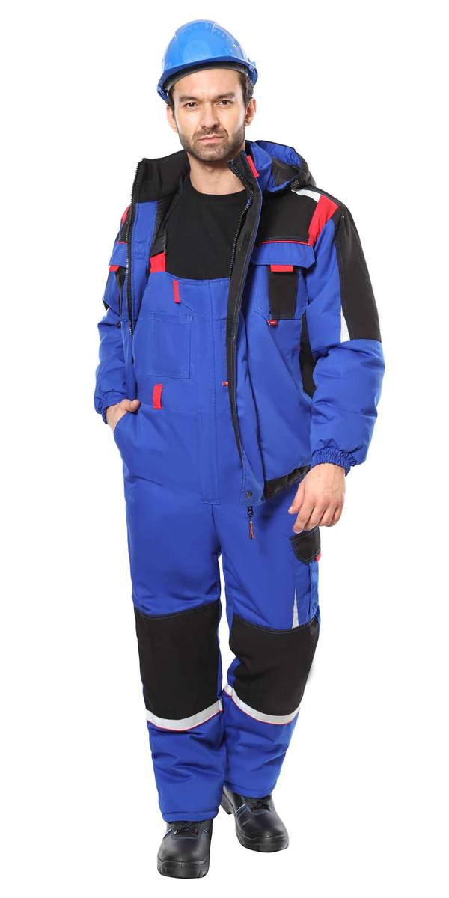
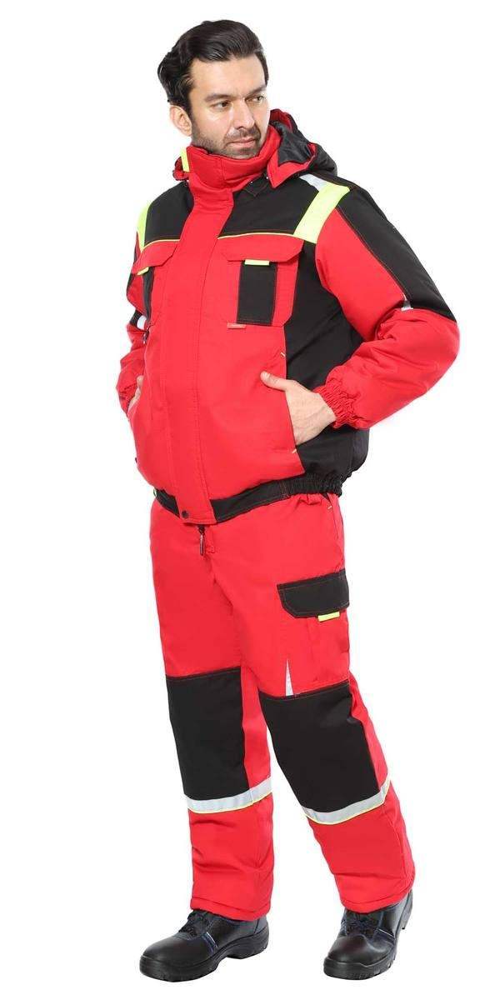
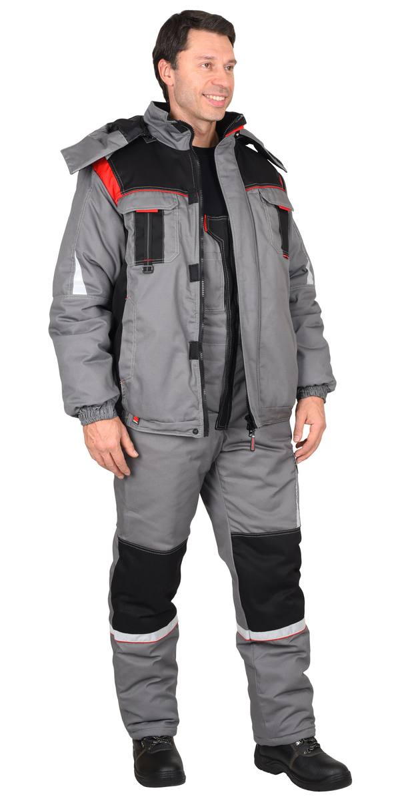

Костюм «Стан»
Арт. 114401 — Костюм : куртка , бр, оливковый с черной и красной отделкой
Костюм : куртка кор., полукомб. васильковый с красной и черной отд. (ЧЗ)
Костюм : куртка , бр, оливковый с черной и красной отделкой

Костюм : куртка , брюки, синий со средне-серым и лимонной отделкой
Костюм : куртка , п/к, оливковый с черной и красной отделкой
Костюм : куртка , п/к, ср.серый с черной и красной отделкой Костюм : куртка , п/к, синий со средне-серым и лимонной отделкой
Костюм : куртка , п/к, синий со средне-серым и лимонной отделкой
Костюм куртка кор., полукомбинезон синий со средне-серым и лимонным (ЧЗ)
Костюм зимний: куртка, п/к васильковый с черным и красным (ЧЗ)
Костюм зимний: куртка, п/к, красный с черным и лимонной отделкой (ЧЗ)
Костюм зимний: куртка, п/к, средне-серый с черной и красной отделкой тк. Родос (ЧЗ)Куртка прямого силуэта, короткая, с воротником стойка, с центральной застёжкой на молнию, накрытую ветрозащитным клапаном, застёгивающимся на кнопку и липучки, с подрезными бочками, с верхними фигурными карманами с фигурными клапанами на липучках, с нижними карманами в швах, с притачным поясом регулирующимся по ширине при помощи хлястиков и кнопок. Рукава с манжетами на кнопках.
Полукомбинезон с застёжкой гульфика и застёжкой в правом боковом шве на пуговицы, верхним накладным карманом и нижними внутренними боковыми карманами, с наколенниками, с накладным карманом на левом боковом шве с клапа
| Артикул | Вариант / цвет |
|---|---|
| 2980 | Костюм : куртка кор., полукомб. васильковый с красной и черной отд. (ЧЗ) |
| 114401 | Костюм : куртка , бр, оливковый с черной и красной отделкой |
| 162822 | Костюм : куртка , брюки, синий со средне-серым и лимонной отделкой |
| 113913 | Костюм : куртка , п/к, оливковый с черной и красной отделкой |
| 108117 | Костюм : куртка , п/к, ср.серый с черной и красной отделкой |
| 161631 | Костюм : куртка , п/к, синий со средне-серым и лимонной отделкой |
| 102733 | Костюм куртка кор., полукомбинезон синий со средне-серым и лимонным (ЧЗ) |
| 123453 | Костюм зимний: куртка, п/к васильковый с черным и красным (ЧЗ) |
| 128328 | Костюм зимний: куртка, п/к, красный с черным и лимонной отделкой (ЧЗ) |
| 103421 | Костюм зимний: куртка, п/к, средне-серый с черной и красной отделкой тк. Родос (ЧЗ) |